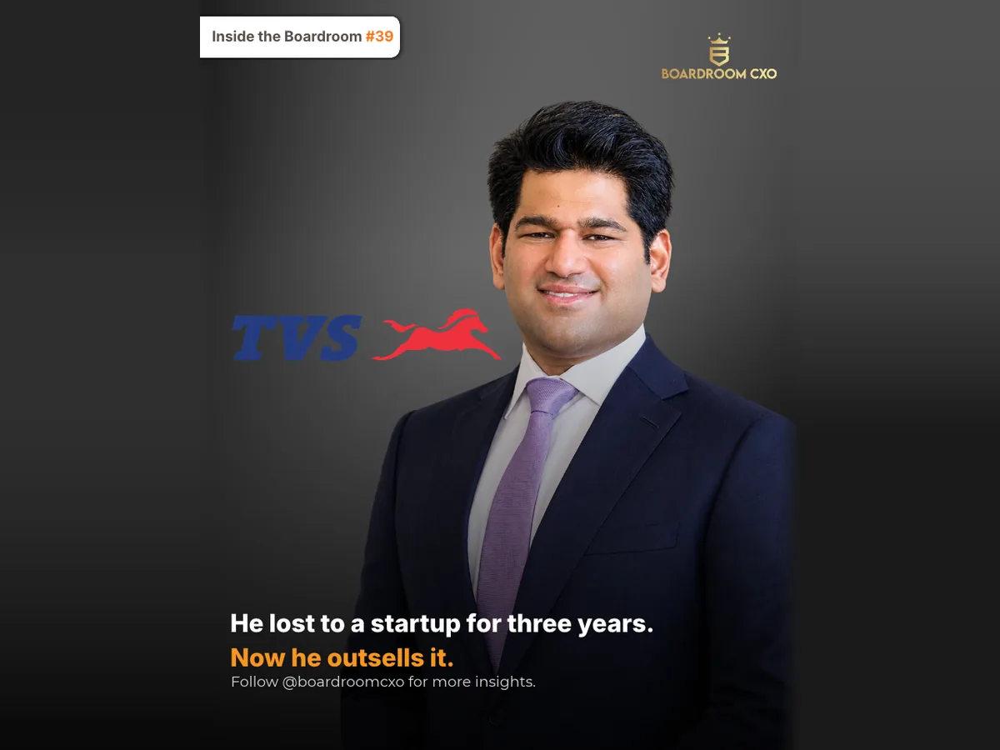

Key Takeaways
- Ola Electric took more than 1 lakh bookings in under 24 hours in July 2021, while TVS's iQube, launched in January 2020 through ten Bengaluru dealers, sold just 1,061 units in FY21.
- TVS committed ₹1,000 crore to a separate EV business in July 2021 and sold the iQube through dealers who could also service it, reaching more than 3,300 touchpoints in over 3,000 cities by June 2026.
- TVS became India's No. 1 electric two-wheeler maker in April 2025 by 27 units, and in FY26 it sold 3,41,471 against Ola's 1,64,294, which fell 52 per cent to fourth place.
Ola Electric won the launch. TVS Motor won the market. The difference was a network of dealers.
In July 2021, Ola Electric opened bookings for a scooter nobody had ridden. More than 1 lakh people reserved one in under 24 hours.
At its launch in August, founder Bhavish Aggarwal said the scooters India already rode were boring, dull, slow and clunky, and out of sync with what Indians wanted. The old two-wheeler makers were the target.
Five years later, one of them was India's largest electric two-wheeler maker.
TVS iQube vs Ola: How the Electric Scooter Race Began
TVS Motor had launched its first electric scooter, the iQube, in Bengaluru in January 2020. It was priced at ₹1.15 lakh and sold through just ten dealerships in one city. The company said it would start with capacity for 1,000 scooters a month.
Demand was slow at first. In FY21, the iQube sold 1,061 units for the whole year.
Ola, by contrast, grew at startup speed. In FY23, Ola sold about 1.53 lakh electric two-wheelers against about 80,600 for the iQube, close to twice as many. In FY25, Ola was still number one with about 3.44 lakh. TVS was second with about 2.38 lakh.
The obvious answer for TVS was to copy the challenger. Sell online, own the stores, and match the noise.
Who Is Sudarshan Venu?
Sudarshan Venu is the Chairman and Managing Director of TVS Motor Company. He studied mechanical engineering and economics, at the University of Pennsylvania's School of Engineering and its Wharton School, and has a master's degree from the Warwick Manufacturing Group at the University of Warwick.
He became Joint Managing Director in 2014 and Managing Director in May 2022. He took over as Chairman and Managing Director on 25 August 2025.
How TVS Built Its EV Business Through Dealers
TVS did not copy Ola. It built on what it already had.
- A serious, separate EV budget. On 16 July 2021, the day after Ola opened bookings, TVS said it had committed ₹1,000 crore to electric vehicles under a separate vertical. Later that year it set up a dedicated EV subsidiary, with a team of about 500 engineers working on electric products.
- Dealers who can sell and fix. TVS sold the iQube the way it sells everything, through dealers who could also service it. By June 2026, TVS said its electric scooters were backed by more than 3,300 sales and service touchpoints across more than 3,000 cities. Ola, meanwhile, had sold through its own stores.
- A wider range. The flagship TVS X came in 2023. The Orbiter followed in August 2025 at ₹99,900, below the iQube.
The approach was less exciting than a launch event. But every one of those partners sold, serviced and vouched for the product in its own town.
What TVS's Network Strategy Delivered
The scoreboard flipped in April 2025. For the first time, TVS was India's number one electric two-wheeler maker in a month, with 19,736 units against Ola's 19,709. The margin was 27 scooters.
It did not stop there. In FY26, TVS sold 3,41,471 electric two-wheelers, up 44 per cent, and was first for the full year. Ola sold 1,64,294, down 52 per cent, and fell to fourth place behind Bajaj and Ather.
In October 2026, TVS sold a record 60,429 electric scooters in a single month, 27 per cent of the market. Ola sold 12,096.
And in August 2026, Ola announced it would open its sales and service network to dealer partners across India. By November it had stopped taking orders at its own outlets.
One last twist. The TVS Jupiter, a petrol scooter of exactly the kind Ola had dismissed, sold a record 14,63,328 units in FY26.
The Boardroom Lesson: Noise Wins the Launch, Networks Win the Market
When a loud challenger arrives, incumbents are tempted to become more like it. The challenger's model looks modern, and their own looks old.
Noise wins the launch. Networks win the market.
Venu's choice was to treat TVS's dealers as an advantage rather than a legacy. Buyers of a new kind of vehicle want to know who will fix it. TVS had that answer in thousands of towns before Ola did.
Common Mistakes Boards Make When a Disruptor Arrives
Boards of established companies facing a well-funded newcomer tend to make the same three errors.
They copy the challenger's model. Ola's direct-to-customer stores were new. That did not make them better for a product that needs regular service.
They judge the race by bookings and headlines. Ola's early numbers were far ahead. The test that mattered was who customers trusted after a year of riding.
They underfund the new business. TVS put ₹1,000 crore and a separate unit behind electric vehicles. A side project inside the old business would not have caught up.
A Framework for Leading Against a Disruptor
When we brief boards on a leadership search in a category being disrupted, we push for three specific checks.
- Ask the leader what the company already has that the challenger cannot buy. For TVS, it was a trusted dealer and service network. A leader who can name and use that asset is worth more than one who wants to start from scratch.
- Look for patience with a slow start. The iQube sold 1,061 units in its first full year. Leaders who can keep investing through weak early numbers are rare.
- Give the new business its own budget and team. Hire or appoint people to run it as a business, not as a project inside the old one.
Why This Belongs in the Boardroom, Not Just the Business Pages
This story sits beside Rajiv Bajaj and the Chetak, another established maker that came back into scooters with an electric product and is now in the same top group as TVS. Both show that an old company with a real network can beat a new one with a louder voice.
Anyone can sell the first scooter. The network sells the next million.
Sources
- Autocar Professional, TVS launches its first electric scooter at Rs 115,000, January 2020
- Business Today, Zip, zap, zoom! Ola scooter takes off, 1 lakh EVs booked in a day, July 2021
- Business Today, TVS Motor to invest Rs 1,000 cr to manufacture electric vehicles, July 2021
- Autocar India, Scooters in India are boring and don't represent the future: Ola Electric head, August 2021
- Autocar Professional, E2W OEMs open FY2026 with best-ever April sales, TVS is No. 1 for the first time, April 2025
- Autocar Professional, Record 1.4 million electric 2Ws sold in FY2026, command 57% share of India EV market, April 2026
- Business Today, Ola Electric shifts gears from D2C-only model to dealer partners, August 2026
- Autocar Professional, Diwali Comes Early for Electric 2Ws: October Sales Cross 223,000, TVS Delivers Record 60,429 Units, November 2026
Related Reading
Rajiv Bajaj Walked Away From Scooters. Then He Rebuilt the Chetak Name.
Read → R · 02 Founder Leadership · August 2026Everyone Said Royal Enfield Was Finished. Siddhartha Lal Asked for Two Years.
Read → R · 03 Founder Leadership · October 2026Shailesh Chandra Took Over Tata's Cars at Their Low Point. Sales Are Now Nearly 5x.
Read →Facing a loud new rival and need a leader who builds on what you already own?
We screen for business and sales leaders who have grown a new category through an existing dealer and service network, not only those who chased the challenger's model. Brief us on the mandate and we will tell you who the market really has.
Brief Us on a Mandate See all Sales & Retail roles we fill →